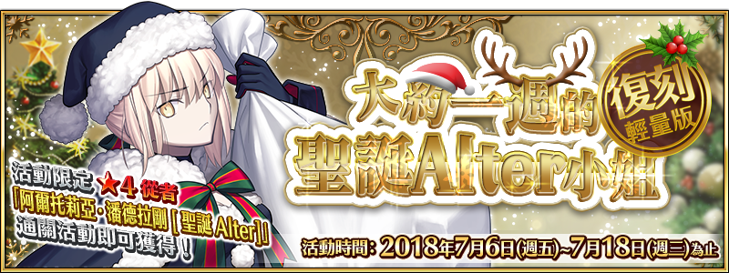

本頁面資訊僅供參考，實際情況請以遊戲內資料為準。
由於直接使用官方翻譯，可能會與其他站內翻譯相異，敬請見諒。
其他公告內容請參照日版當時公告翻譯。
| 活動限定效果 | ||
|---|---|---|
 | 聖誕禮物 EX |
魔法襪子的掉落數增加4個【『復刻：大約一週的聖誕Alter小姐 輕量版』活動限定】 |
| 聖誕禮物 A |
魔法襪子的掉落數增加3個【『復刻：大約一週的聖誕Alter小姐 輕量版』活動限定】 |
| 聖誕禮物 B |
魔法襪子的掉落數增加2個【『復刻：大約一週的聖誕Alter小姐 輕量版』活動限定】 |
| 聖誕禮物 C |
魔法襪子的掉落數增加1個【『復刻：大約一週的聖誕Alter小姐 輕量版』活動限定】 |
|
| 每堆金星的獲得數量增加1個(最大解放:2個)【『復刻：大約一週的聖誕Alter小姐 輕量版』活動限定】 |
|
| 每堆銀鈴的獲得數量增加1個(最大解放:2個)【『復刻：大約一週的聖誕Alter小姐 輕量版』活動限定】 |
|
| 每堆蝴蝶結的獲得數量增加1個(最大解放:2個)【『復刻：大約一週的聖誕Alter小姐 輕量版』活動限定】 |
|
| 魔法襪子的掉落機率增加20%(最大解放:40%)【『復刻：大約一週的聖誕Alter小姐 輕量版』活動限定】 |
| 關卡 | AP | 素材 | ||||
|---|---|---|---|---|---|---|
| 初級 | 10 | ○ | △ | △ | ||
| 中級 | 20 | △ | ○ | △ | △ | |
| 上級 | 30 | △ | △ | ○ | △ | |
| 超級 | 40 | △ | ○ | △ | ||
| 聖夜級 | 40 | △ | △ | △ | ○ |
- 主線關卡
-
序幕 黑色的聖誕老人 消耗AP 推薦Lv. 初次報酬 開放條件 5 10 7/6 13:00~7/18 12:59 〉 職階傾向 QP Exp 絆 
1,400 275 115 Wave 1 1  Lv.8 馴鹿人 HP1,155
Lv.8 馴鹿人 HP1,1552 Lv.8 馴鹿人 HP1,1553 Lv.8 馴鹿人 HP1,155第一夜 大流士君 消耗AP 推薦Lv. 初次報酬 開放條件 5 10 7/6 13:00~7/18 12:59
通過：序幕 黑色的聖誕老人〉 職階傾向 QP Exp 絆 


1,400 275 115 Wave 1 1  Lv.4 馴鹿人 HP719
Lv.4 馴鹿人 HP7192 Lv.2 雪人 HP1,8073 Lv.4 馴鹿人 HP719Wave 2 1 Lv.4 雪人 HP3,0052 Lv.4 雪人 HP3,0053 Lv.4 雪人 HP3,005Wave 3 1 Lv.12 大流士Ⅲ歲 HP8,1572 Lv.10 呂布君 HP8,5443  Lv.10 魅影君 HP7,599
Lv.10 魅影君 HP7,599第二夜 其名為瑪莉小姐 消耗AP 推薦Lv. 初次報酬 開放條件 5 15 7/6 13:00~7/18 12:59
通過：第一夜 大流士君〉 職階傾向 QP Exp 絆 

1,900 550 165 Wave 1 1  Lv.8 馴鹿人 HP1,143
Lv.8 馴鹿人 HP1,1432 Lv.8 馴鹿人 HP1,1433  Lv.8 聖誕之手 HP1,169
Lv.8 聖誕之手 HP1,169Wave 2 1 Lv.10 聖誕之手 HP1,3632 Lv.10 聖誕之手 HP1,3633 Lv.10 聖誕之手 HP1,363Wave 3 1  Lv.18 瑪莉小姐 HP20,844
Lv.18 瑪莉小姐 HP20,8442  Lv.16 今天休息的德翁 HP20,952
Lv.16 今天休息的德翁 HP20,9523  Lv.12 小蝴蝶犬 HP11,653
Lv.12 小蝴蝶犬 HP11,653第三夜 Heart Break☆JingKe小姐 消耗AP 推薦Lv. 初次報酬 開放條件 5 20 7/7 0:00~7/18 12:59
通過：第二夜 其名為瑪莉小姐〉 職階傾向 QP Exp 絆 2,400 955 215 Wave 1 1 Lv.10 馴鹿人 HP1,2552 Lv.10 雪人 HP6,5973 Lv.10 雪人 HP6,597Wave 2 1 Lv.8 巨型雪人 HP12,4942 Lv.20 膨脹的廢狗 HP13,3143 Lv.20 瑪爾大 HP14,172Wave 3 1 Lv.26 爛醉的荊軻 HP27,432第四夜 PN.孤兒院的長腿叔叔 消耗AP 推薦Lv. 初次報酬 開放條件 5 22 7/8 0:00~7/18 12:59
通過：第三夜 Heart Break☆JingKe小姐〉 職階傾向 QP Exp 絆 
2,600 1,120 235 Wave 1 1 Lv.14 馴鹿人 HP1,6722 Lv.16 巨型馴鹿人 HP3,5273  Lv.14 超級馴鹿人 HP8,361
Lv.14 超級馴鹿人 HP8,361Wave 2 1 Lv.18 超級馴鹿人 HP10,5732  Lv.18 Emiya HP12,092
Lv.18 Emiya HP12,0923 Lv.18 羅賓漢 HP15,552Wave 3 1 Lv.28 大衛 HP36,872第五夜 吉爾伽美什君 消耗AP 推薦Lv. 初次報酬 開放條件 5 24 7/9 0:00~7/18 12:59
通過：第四夜 PN.孤兒院的長腿叔叔〉 職階傾向 QP Exp 絆 2,800 1,300 255 Wave 1 1 Lv.18 聖誕之手 HP2,1492 Lv.20 聖誕之手 HP4,4903 Lv.18 聖誕之手 HP2,149Wave 2 1 Lv.20 聖誕之手 HP4,4902 Lv.20 聖誕之拳 HP9,8353 Lv.20 聖誕之手 HP4,490Wave 3 1  Lv.22 傑克 HP34,720
Lv.22 傑克 HP34,7202 Lv.26 童謠 HP35,378第六夜 冒牌聖誕老人．凱撒君 消耗AP 推薦Lv. 初次報酬 開放條件 5 28 7/10 0:00~7/18 12:59
通過：第五夜 吉爾伽美什君〉 職階傾向 QP Exp 絆 3,200 1,610 295 Wave 1 1 Lv.8 馴鹿人 HP1,1432 Lv.10 馴鹿人 HP1,3333 Lv.8 馴鹿人 HP1,143Wave 2 1 Lv.10 馴鹿人 HP1,3332 Lv.12 馴鹿人 HP1,5333 Lv.10 馴鹿人 HP1,333Wave 3 1 Lv.8 超級羅馬人 HP100,0002 Lv.32 偽聖誕凱撒君 HP104,2403 Lv.8 超級羅馬人 HP100,000第七夜 突擊！鄰家的聖誕Alter姐姐 消耗AP 推薦Lv. 初次報酬 開放條件 5 30 7/11 0:00~7/18 12:59
通過：第六夜 冒牌聖誕老人．凱撒君〉 職階傾向 QP Exp 絆 
3,400 2,190 315 Wave 1 1 Lv.20 皮埃爾A HP4,1102 Lv.20 皮埃爾B HP4,1103 Lv.20 皮埃爾C HP4,1104 Lv.20 皮埃爾D HP4,1105 Lv.20 皮埃爾E HP4,1106 Lv.20 皮埃爾F HP4,1107 Lv.20 皮埃爾G HP4,110Wave 2 1  Lv.33 貞德．Alter HP74,928
Lv.33 貞德．Alter HP74,928 - 襪子收集
-
襪子蒐集 初級 夢中的聖誕 消耗AP 推薦Lv. 初次報酬 開放條件 10 20 207/6 13:00~7/18 12:59
通過：第一夜 大流士君∞ 職階傾向 QP Exp 絆 2,400 955 215 Wave 1 1 Lv.10 馴鹿人 HP1,3332 Lv.10 馴鹿人 HP1,333
Lv.10 巨型馴鹿人 HP2,4763 Lv.10 馴鹿人 HP1,333Wave 2 1 Lv.14 馴鹿人 HP1,7232 Lv.14 馴鹿人 HP1,723
Lv.14 雪人 HP3,6203 Lv.14 馴鹿人 HP1,723Wave 3 1 Lv.14 巨型馴鹿人 HP9,7652 Lv.20 關係融洽的魔女！ HP58,4503 Lv.14 超級馴鹿人 HP17,234襪子蒐集 中級 微笑的聖誕 消耗AP 推薦Lv. 初次報酬 開放條件 20 30 207/6 13:00~7/18 12:59
通過：第一夜 大流士君
通過：襪子蒐集 初級 夢中的聖誕∞ 職階傾向 QP Exp 絆 3,400 2,190 315 Wave 1 1 Lv.20 馴鹿人 HP2,157
Lv.20 雪人 HP5,0582 Lv.20 雪人 HP5,0583 Lv.20 馴鹿人 HP2,157
Lv.20 雪人 HP5,058Wave 2 1 Lv.22 雪人 HP5,560
Lv.20 巨型雪人 HP8,6502 Lv.22 聖誕之手 HP7,638
Lv.22 巨型雪人 HP10,1243 Lv.22 雪人 HP5,560
Lv.20 巨型雪人 HP8,650Wave 3 1 Lv.40 陰晴不定的女神 HP55,0352  Lv.40 蠻橫無理的女神 HP59,508
Lv.40 蠻橫無理的女神 HP59,5083 Lv.20 巨型雪人 HP21,424襪子蒐集 上級 好動的聖誕 消耗AP 推薦Lv. 初次報酬 開放條件 30 40 207/6 13:00~7/18 12:59
通過：第一夜 大流士君
通過：襪子蒐集 中級 微笑的聖誕∞ 職階傾向 QP Exp 絆 4,400 5,690 415 Wave 1 1 Lv.30 馴鹿人 HP3,1562 Lv.30 巨型馴鹿人 HP6,126
Lv.30 聖誕之手 HP3,3223 Lv.30 超級馴鹿人 HP12,084
Lv.30 聖誕之手 HP6,449Wave 2 1 Lv.33 雪人 HP8,2192 Lv.33 聖誕之手 HP3,623
Lv.33 巨型雪人 HP15,1093 Lv.33 聖誕之手 HP7,051
Lv.33 雪人 HP8,219Wave 3 1 Lv.45 快樂每一天的少年 HP42,4762  Lv.50 少年心的肌肉男 HP84,336
Lv.50 少年心的肌肉男 HP84,3363  Lv.45 無視交付期限的少年 HP49,595
Lv.45 無視交付期限的少年 HP49,595襪子蒐集 超級 極限的聖誕 消耗AP 推薦Lv. 初次報酬 開放條件 40 50 207/6 13:00~7/18 12:59
通過：第一夜 大流士君
通過：襪子蒐集 上級 好動的聖誕∞ 職階傾向 QP Exp 絆 5,400 10,190 515 Wave 1 1 Lv.40 聖誕之手 HP4,302
Lv.40 雪人 HP9,8952 Lv.40 聖誕之手 HP8,409
Lv.40 聖誕之拳 HP9,6213 Lv.40 聖誕之手 HP4,302
Lv.40 雪人 HP9,895Wave 2 1 Lv.40 聖誕之手 HP8,4092 Lv.40 作為紀念想去熱海的淑女 HP41,2723 Lv.40 聖誕之手 HP8,409
Lv.40 聖誕之拳 HP9,621Wave 3 1 Lv.55 成為聖誕老人的大姐姐 HP58,2332 Lv.55 想做聖誕老人的大姐姐 HP56,5183 Lv.60 想去南國休假的海盜 HP93,700襪子蒐集 聖夜級 大人也要過聖誕 消耗AP 推薦Lv. 初次報酬 開放條件 50 80 7/11 0:00~7/18 12:59
通過：第七夜 突擊！鄰家的聖誕Alter姐姐
通過：襪子蒐集 超級 極限的聖誕∞ 職階傾向 QP Exp 絆 
8,400 29,690 815 Wave 1 1  Lv.50 超級馴鹿人 HP11,838
Lv.50 超級馴鹿人 HP11,838
Lv.50 巨型雪人 HP15,1922  Lv.50 禮物是好文明 HP59,962
Lv.50 禮物是好文明 HP59,9623 Lv.50 超級馴鹿人 HP11,838
Lv.50 巨型雪人 HP15,192Wave 2 1 Lv.50 聖誕之拳 HP11,9722 Lv.50 就讓我賜予你鞭子吧 HP54,9573 Lv.50 聖誕之拳 HP11,972Wave 3 1  Lv.65 工作中又怎樣？ HP97,616
Lv.65 工作中又怎樣？ HP97,6162  Lv.65 聖誕老人募集中！ HP70,168
Lv.65 聖誕老人募集中！ HP70,1683  Lv.70 還很年輕。還能行。 HP143,736
Lv.70 還很年輕。還能行。 HP143,736
| 第1~4輪 | |||||
|---|---|---|---|---|---|
| 獎品 | 數量 | 獎品 | 數量 | 獎品 | 數量 |
| 1 | 2 | 3 | |||
| 4 | 20 | 5 | |||
| 5 | 5 | 5 | |||
| 1 | 1 | 1 | |||
| 1 | 1 | 1 | |||
| 1 | 2 | 2 | |||
| 2 | 2 | 2 | |||
| 2 | 2 | 4 | |||
| 4 | 4 | 4 | |||
| 4 | 4 | 4 | |||
| 40 | 20 | 500k | 2 | ||
100k | 15 | 50k | 40 | 30k | 80 |
10k | 100 | 2k | 4 | 100 | 100 |
| 第5輪 | |||||
|---|---|---|---|---|---|
| 獎品 | 數量 | 獎品 | 數量 | 獎品 | 數量 |
| 1 | 2 | 3 | |||
| 4 | 20 | 5 | |||
| 5 | 5 | 5 | |||
| 1 | 1 | 1 | |||
| 1 | 1 | 1 | |||
| 1 | 2 | 2 | |||
| 2 | 2 | 2 | |||
| 2 | 2 | 4 | |||
| 4 | 4 | 4 | |||
| 4 | 4 | 4 | |||
| 40 | 20 | 500k | 2 | ||
100k | 15 | 50k | 40 | 30k | 80 |
10k | 100 | 2k | 4 | 100 | 100 |
| 第6~8輪 | |||||
|---|---|---|---|---|---|
| 獎品 | 數量 | 獎品 | 數量 | 獎品 | 數量 |
| 4 | 26 | 5 | |||
| 5 | 5 | 5 | |||
| 1 | 1 | 1 | |||
| 1 | 1 | 1 | |||
| 1 | 2 | 2 | |||
| 2 | 2 | 2 | |||
| 2 | 2 | 4 | |||
| 4 | 4 | 4 | |||
| 4 | 4 | 4 | |||
| 40 | 20 | 500k | 2 | ||
100k | 15 | 50k | 40 | 30k | 80 |
10k | 100 | 2k | 4 | 100 | 100 |
| 迷你蝴蝶結 | |||
|---|---|---|---|
| 交換物 | 需求數 | 限制 | 共需 |
| 150 | 1 | 150 | |
| 100 | 1 | 100 | |
| 5 | 50 | 250 | |
| 10 | 50 | 500 | |
| 20 | 20 | 400 | |
| 20 | 20 | 400 | |
| 20 | 20 | 400 | |
| 10 | 0 | 0 | |
| 合計 | 2,200 | ||
| 銀鈴 | |||
|---|---|---|---|
| 交換物 | 需求數 | 限制 | 共需 |
| 150 | 1 | 150 | |
| 100 | 1 | 100 | |
| 20 | 20 | 400 | |
| 20 | 20 | 400 | |
| 20 | 20 | 400 | |
| 20 | 20 | 400 | |
| 10 | 0 | 0 | |
| 合計 | 1,850 | ||
| 金星 | |||
|---|---|---|---|
| 交換物 | 需求數 | 限制 | 共需 |
| 150 | 2 | 300 | |
| 100 | 2 | 200 | |
| 40 | 10 | 400 | |
| 20 | 20 | 400 | |
| 20 | 20 | 400 | |
| 20 | 20 | 400 | |
| 1 | 0 | 0 | |
| 合計 | 2,100 | ||
| 魔法襪子 | |||
|---|---|---|---|
| 交換物 | 需求數 | 限制 | 共需 |
| 2 | 0 | 0 | |
| 合計 | 0 | ||
| 特別兌換券 | |||
|---|---|---|---|
| 交換物 | 需求數 | 限制 | 共需 |
| 1 | 5 | 5 | |
| 合計 | 5 | ||